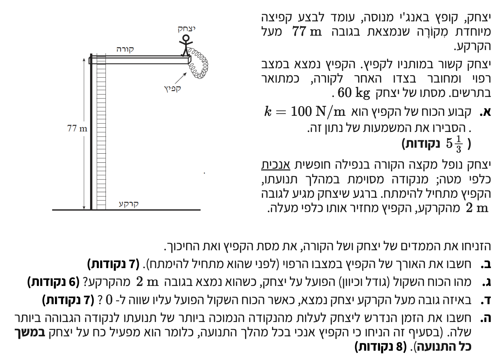

פתרון מודרך, מפורט ומוסבר צעד-אחר-צעד לתלמידים

סעיף ה' המופיע להלן אינו תואם במדויק לשאלת הבגרות המקורית והתווסף לו ניסוח הבהרה המכוון את הנבחן לפתרון מסוים (הנחת קפיץ הנשאר מתוח/דחוס לאורך כל התנועה). הסעיף המקורי ניתן היה לפרשנות שהייתה מביאה לפתרון שונה לחלוטין (חבל באנג'י שהופך רפוי). ניסוח ההבהרה לסעיף ה' מובא כפי שנוסח בספר הפתרונות לבגרויות של עדי רוזן.
מסתו של יצחק היא \( m = 60\text{ kg} \), וקבוע הכוח של הקפיץ הוא \( k = 100\text{ N/m} \). הנתונים מתאימים למערכת היחידות התקנית (MKS) ולכן אין צורך בהמרה.
הסבר פיזיקלי מילולי למשמעות המספר והיחידות של קבוע הכוח הנתון.
חוק הוק (גודל הכוח האלסטי), מתוך דף הנוסחאות - פרק דינמיקה.
על פי חוק הוק, הכוח שמפעיל קפיץ נמצא ביחס ישר למידת ההתארכות (או ההתכווצות) שלו, כאשר יחס זה נקרא "קבוע הקפיץ" ומסומן באות \( k \).
גובה הקורה (ההתחלתי) מעל הקרקע הוא \( H = 77\text{ m} \). הנקודה הנמוכה ביותר שיצחק מגיע אליה היא בגובה \( h_{\text{min}} = 2\text{ m} \) מהקרקע. יצחק נופל ממנוחה, ולכן מהירותו בהתחלה היא \( v_1 = 0 \). בנקודה הנמוכה ביותר, רגע לפני שהוא עולה חזרה, גודל המהירות שלו מתאפס ולכן גם שם \( v_2 = 0 \).
את אורכו הרפוי של הקפיץ, אותו נסמן ב-\( L_0 \).
נשתמש בעקרון שימור אנרגיה מכנית, שכן הכוחות היחידים המבצעים עבודה במערכת הם כוח הכובד וכוח הקפיץ (שניהם כוחות משמרים), והזנחנו את התנגדות האוויר.
נבחר את פני הקרקע כמישור הייחוס לאנרגיה פוטנציאלית כובדית (\( h=0 \)). נקבע את מצב 1 על הקורה ואת מצב 2 בנקודה הנמוכה ביותר.
האנרגיה המכנית הכוללת במצב 1 (על הקורה, הקפיץ רפוי והמהירות אפס) מורכבת מאנרגיה פוטנציאלית כובדית בלבד:
האנרגיה המכנית הכוללת במצב 2 (בנקודה הנמוכה ביותר, המהירות אפס) מורכבת מאנרגיה פוטנציאלית כובדית ואנרגיה פוטנציאלית אלסטית של הקפיץ המתוח:
מאחר ומתקיים שימור אנרגיה מכנית \( E_1 = E_2 \), נשווה את המשוואות ונחלץ את ההתארכות \( \Delta l \):
המרחק הכולל שיצחק עבר מטה הוא המרחק מהקורה ועד לנקודה הנמוכה: \( d = H - h_{\text{min}} = 77 - 2 = 75\text{ m} \).
מרחק זה מורכב מהאורך הרפוי של הקפיץ \( L_0 \) ועוד ההתארכות שלו \( \Delta l \). לכן:
כדי להבין את הסיטואציה טוב יותר, דמיינו את קפיצתו של יצחק: ברגע שהוא עוזב את הקורה, הוא נמצא למעשה בנפילה חופשית לאורך 45 המטרים הראשונים (שזהו אורכו הרפוי של הקפיץ). כל עוד הוא עובר את המרחק הזה, הקפיץ נותר רפוי ולא מפעיל עליו שום כוח כלפי מעלה. מיד לאחר מכן, ב-30 המטרים האחרונים של הנפילה, הקפיץ מתחיל להימתח. בשלב קריטי זה, האנרגיה המכנית של יצחק מומרת בהדרגה לאנרגיה פוטנציאלית אלסטית האגורה בקפיץ, עד לבלימתו המוחלטת בנקודה הנמוכה ביותר. התבוננות כזו על התנועה עוזרת לראות את ההיגיון שמאחורי הנוסחאות!
יצחק נמצא בגובה \( 2\text{ m} \) מהקרקע. מסעיף ב' ידוע לנו כי בנקודה זו התארכות הקפיץ היא המקסימלית וגודלה \( \Delta l = 30\text{ m} \). תאוצת הכובד נלקחת כ-\( g = 10\text{ m/s}^2 \).
את גודלו וכיוונו של הכוח השקול הפועל על יצחק בנקודה זו.
נשתמש בחוק השני של ניוטון למציאת שקול הכוחות, לאחר שרטוט תרשים כוחות חופשי (FBD).
על יצחק פועלים שני כוחות לאורך ציר התנועה:
1. כוח הכובד \( F_g \) שכיוונו כלפי מטה.
2. כוח אלסטי מהקפיץ \( F_s \) שכיוונו כלפי מעלה (שכן הקפיץ מתוח ומושך חזרה למעלה).
נקבע ציר \( y \) חיובי כלפי מעלה. משוואת הכוחות היא:
נחשב את גודל כל אחד מהכוחות ונציב:
הסימן החיובי מעיד על כך שהכוח השקול פועל בכיוון הציר שבחרנו (כלפי מעלה).
בנקודה המבוקשת, הכוח השקול על יצחק שווה לאפס, כלומר \( \sum F = 0 \).
את הגובה \( h_{\text{eq}} \) מעל הקרקע שבו מתקיים מצב זה.
על פי משוואת הכוחות שבנינו בסעיף הקודם, נאפס את הכוח השקול על מנת למצוא את התארכות הקפיץ החדשה, אותה נסמן ב-\( \Delta l' \):
במצב זה, המרחק הכולל שיצחק ירד מגובה הקורה מורכב מאורכו הרפוי של הקפיץ \( L_0 \) וממידת התארכותו בנקודה זו \( \Delta l' \):
הגובה מעל הקרקע הוא ההפרש בין גובה הקורה למרחק הירידה:
לפי הנחת השאלה המעודכנת (עדי רוזן), הקפיץ האנכי מפעיל כוח על יצחק בכל משך התנועה. במצב זה, התנועה כולה היא תנועה הרמונית פשוטה אנכית סביב נקודת שיווי המשקל.
מסתו של יצחק: \( m = 60\text{ kg} \).
קבוע הקפיץ: \( k = 100\text{ N/m} \).
את הזמן הנדרש ליצחק לעלות מהנקודה הנמוכה ביותר ועד לנקודה הגבוהה ביותר של תנועתו, \( t \).
בתנועה הרמונית פשוטה, מעבר מקצה תנועה אחד (הנקודה הנמוכה ביותר) לקצה התנועה השני (הנקודה הגבוהה ביותר) נמשך בדיוק חצי זמן מחזור.
על פי דף הנוסחאות, הכוח המחזיר בתנועה הרמונית פשוטה מוגדר כ- \( \sum F = -cx \), כאשר \( c \) הוא קבוע הכוח של המערכת. אבל רגע, הרי במערכת שלנו פועל גם כוח הכובד (\(mg\))! האם הכוח השקול הוא אכן רק יחסי לקבוע הקפיץ?
כדי לראות זאת, נגדיר את ההעתק \( x \) מנקודת שיווי המשקל (שאת גובהה מצאנו בסעיף ד'). נסמן את התארכות הקפיץ בנקודת שיווי המשקל כ-\( \Delta l_{eq} \).
בנקודה זו שקול הכוחות מתאפס ולכן מתקיים: \( k \cdot \Delta l_{eq} = mg \).
כעת, נניח שיצחק יורד מרחק נוסף \( x \) מנקודת שיווי המשקל מטה. ההתארכות הכוללת של הקפיץ כעת היא \( \Delta l_{eq} + x \).
נרשום את שקול הכוחות בנקודה זו (נקבע כיוון חיובי כלפי מעלה):
נפתח סוגריים:
מכיוון שהראינו קודם ש- \( k \cdot \Delta l_{eq} = mg \), שני האיברים הללו בדיוק מקזזים זה את זה! אנו נשארים עם:
הכוח פועל בכיוון מנוגד להעתק \( x \) מנקודת שיווי המשקל, ולכן באופן וקטורי זהו כוח מחזיר: \( \sum F = -kx \).
המסקנה: כוח קבוע כמו כוח הכובד מזיז את מיקומה של נקודת שיווי המשקל, אך אינו משנה את קבוע הכוח המחזיר של המערכת! לכן אנו מסיקים כי הקבוע \( c \) שווה בדיוק לקבוע הקפיץ \( k \) (\( c = k = 100\text{ N/m} \)).
כעת, נציב \( c=k \) בנוסחת זמן המחזור \( T \) ונחשב:
מכיוון שהתנועה מהנקודה הנמוכה ביותר (קצה התנועה התחתון) ועד לנקודה הגבוהה ביותר (קצה התנועה העליון) מהווה מחצית תנודה מלאה, נשתמש בקשר \( t = \frac{T}{2} \). זמן העלייה \( t \) הוא מחצית מזמן המחזור: